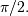
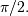

numpy.sin¶
- numpy.sin(x[, out]) = <ufunc 'sin'>¶
Trigonometric sine, element-wise.
Parameters : x : array_like
Angle, in radians (
 rad equals 360 degrees).
rad equals 360 degrees).Returns : y : array_like
The sine of each element of x.
Notes
The sine is one of the fundamental functions of trigonometry (the mathematical study of triangles). Consider a circle of radius 1 centered on the origin. A ray comes in from the axis, makes an angle at the origin (measured counter-clockwise from that axis), and departs from the origin. The
 coordinate of
the outgoing ray’s intersection with the unit circle is the sine
of that angle. It ranges from -1 for to
+1 for  The function has zeroes where the angle is
a multiple of . Sines of angles between and
are negative. The numerous properties of the sine and
related functions are included in any standard trigonometry text.
coordinate of
the outgoing ray’s intersection with the unit circle is the sine
of that angle. It ranges from -1 for to
+1 for  The function has zeroes where the angle is
a multiple of . Sines of angles between and
are negative. The numerous properties of the sine and
related functions are included in any standard trigonometry text.Examples
Print sine of one angle:
>>> np.sin(np.pi/2.) 1.0
Print sines of an array of angles given in degrees:
>>> np.sin(np.array((0., 30., 45., 60., 90.)) * np.pi / 180. ) array([ 0. , 0.5 , 0.70710678, 0.8660254 , 1. ])
Plot the sine function:
>>> import matplotlib.pylab as plt >>> x = np.linspace(-np.pi, np.pi, 201) >>> plt.plot(x, np.sin(x)) >>> plt.xlabel('Angle [rad]') >>> plt.ylabel('sin(x)') >>> plt.axis('tight') >>> plt.show()
(Source code, png, pdf)
{kind=link}